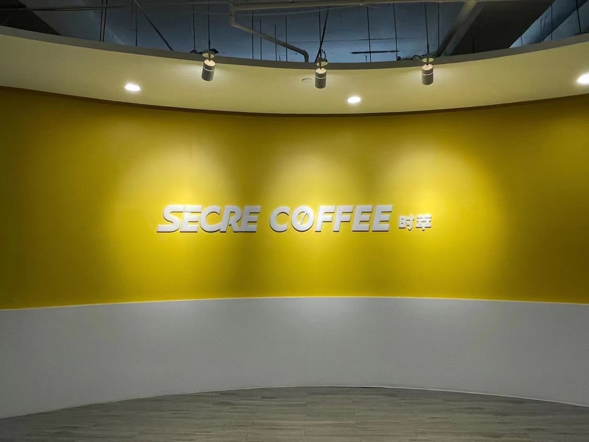
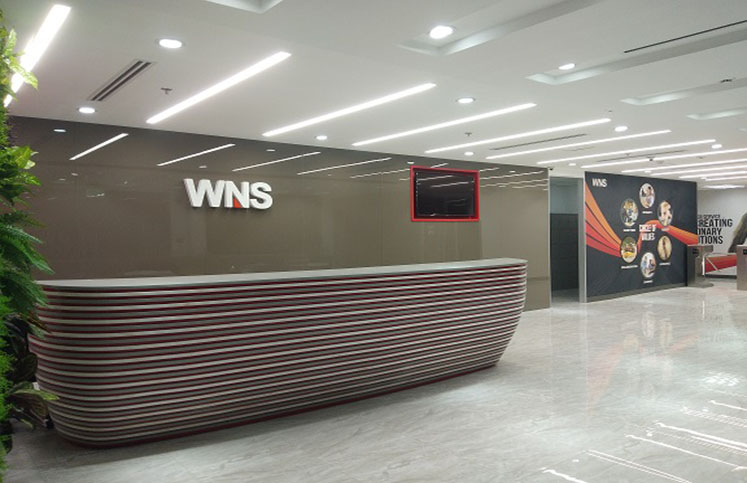

About Me
Profile.
I am a supply chain coordinator. 7 years experience in Logistic make me full of knowledge of china's logistics. I love structure and order and I also stand for quality. I love spending time on fixing little details and optimizing work procedure. Also I like working in a team, you'll learn faster and much more. As the saying goes: 'two heads are better than one'.
Details.
- Age: 29
- Phone: +159 890 26443
- City: Hai Zhu, Guangzhou
- Degree: Bachelor
- Email: ramsaytong@outlook.com
- Freelance: Available
I'm graduated from Guangzhou university and learning logistics engineering as a bachelor for 4 years.
The main course including Logistics management 、The principle and method of logistics planning
and Supply chain management .etc.
Those course thought me about the logistic management base on the data analysis,
why it has such tremendous potential, and how to use it effectively.
and learning logistics engineering as a bachelor for 4 years.
The main course including Logistics management 、The principle and method of logistics planning
and Supply chain management .etc.
Those course thought me about the logistic management base on the data analysis,
why it has such tremendous potential, and how to use it effectively.
Resume
Appreciate your value time to review my resume.
Corporation
Secrecoffee
A start-up company with over 200+ people, which specialized in coffee manufacture ,not only has a great sales volume in Online platform , but also have Offline stores located in Guangzhou, Shenzhen and Foshan.

Professional Experience
Supply Chain Coordinator
2019.09-2022.10
Haizhu district, Canton, Guangdong
- Responsible to corrdinated with third-party warehouse, develop the project SOP and supervise its operatation -- in order to meet the online logistic standard (Tmall/JD/Tik Tok shop/Pinduoduo .etc)
- Responsible to the management, assessment and screening of logistics companies . Develop KPI and complete the indicators. (above 4 score in evaluation system of Tmall/JD/Tik Tok shop)
- Received the requirements from sales department, perform MRP and post the scheme to factory , moniter it and guarantee the safety Stock.
- Responsible to the supply plan of off-line stores , cooperate with managers to carry out various offline activities. Draw a demand forecast to the purchasing colleagues, warning the abnormal inventory timely.
- Responsible to monthly billing (check and review) of third-party warehouse, logistics companies, and factory .
- Arranged inventory checking monthly, Draw inventory data, purchase data and billing data monthly to accounter. Summaried various documents.
- And assist superiors with other requirements.
Kuehne & Nagel
With more than 80000 employees at over 1300 locations in over 100 countries, the Kuehne+Nagel Group is one of the world's leading logistics companies.
Logistic Specialist
2018.04-2019.08
Tianhe district, Canton, Guangdong
- Coordinate the distribution and relative arrangements from Warehouse to dock/Airport/Warehouse.
- Ensure SOP/KPI indicators as well as customer satisfaction targets are obtained.
- Ensure all customer orders are entered into the system and processed by timely, friendly and excellent Customer Service.
- Identify and resolve issues in a timely and professional manner.
- Calculate and register Estimated Gross Profit (EGP) , Responsible for the Billing checking with Customer and supplier.
- To take up additional tasks as assigned , Back up for other team members when necessary.
WNS GZ.Ltd
WNS (Holdings) Limited is a leading BPM company, combine deep industry knowledge with technology and analytics expertise to co-create innovative, digital-led transformational solutions with clients.

Data Specialist
2016.03-2018.03
Yuexiu district, Canton, Guangdong
- Cooperate with Document team and Customer to submit the Bill of landing to Customs in the form of EDI (Including America/Europe/Japan/China).Then , if any rejection/decline,figure out the reason and report ba-ck to Doc team and fix it .
- In routine work,keep trace to arrival time and departure of vessel , create/update a vessel schedule and send to Doc team accordingly.
- Receive the re-submission request from Doc team, check the updated information and re-send the B/L to Customs.
- As a intermediary between Customs/BPM/technical team and Doc team,share/communicate the special case/tricky problem, investigate and bring forward a way to solve the problem in order to try best to meet Customer need & achieve highly performed.
Skills & hobbies
Contact Me
If you are interested in my work experience,please do not hesitate to call me or click below quick button to email me ,thank you!!!
CONTACT MELocation:
Haizhu District, GZ
Email:
ramsaytong@outlook.com
Phone:
159 890 26443